| Year | Observation | |
|---|---|---|
| 0 | 2015 | 123 |
| 1 | 2016 | 39 |
| 2 | 2017 | 78 |
| 3 | 2018 | 52 |
| 4 | 2019 | 110 |
Forecasting: Principles and Practice, the Pythonic Way | Chapter 2
Graphs help reveal:
Visual features should inform the forecasting method considered later.
| Year | Observation | |
|---|---|---|
| 0 | 2015 | 123 |
| 1 | 2016 | 39 |
| 2 | 2017 | 78 |
| 3 | 2018 | 52 |
| 4 | 2019 | 110 |
A DataFrame has two labeled axes: an index for rows and columns for variables.
RangeIndex(start=0, stop=5, step=1)
Index(['Year', 'Observation'], dtype='object')
Year int64
Observation int64
dtype: object
<class 'pandas.core.series.Series'>Timestamp('2020-01-01 00:00:00')
Period('2020-01', 'M')Timestamp: a specific instant.Period: a span of time with a frequency.timestamps = pd.date_range("2020-01-01", periods=3, freq="D")
ts_frame = pd.DataFrame(index=timestamps)
ts_frame["date"] = ts_frame.index.date
ts_frame["year"] = ts_frame.index.year
ts_frame["label"] = ts_frame.index.strftime("%A, %B %-d")
ts_frame| date | year | label | |
|---|---|---|---|
| 2020-01-01 | 2020-01-01 | 2020 | Wednesday, January 1 |
| 2020-01-02 | 2020-01-02 | 2020 | Thursday, January 2 |
| 2020-01-03 | 2020-01-03 | 2020 | Friday, January 3 |
| Year | Length | Sex | Time | |
|---|---|---|---|---|
| 0 | 1896 | 100 | men | 12.0 |
| 1 | 1900 | 100 | men | 11.0 |
| 2 | 1904 | 100 | men | 11.0 |
| 3 | 1908 | 100 | men | 10.8 |
| 4 | 1912 | 100 | men | 10.8 |
| 5 | 1916 | 100 | men | NaN |
| 6 | 1920 | 100 | men | 10.8 |
| 7 | 1924 | 100 | men | 10.6 |
Length Sex
100 men 31
women 23
200 men 30
women 18
400 men 31
women 14
800 men 31
women 23
1500 men 31
women 12
5000 men 27
women 6
10000 men 27
women 8
Name: observations, dtype: int64A valid multi-series table needs a unique combination of identifying keys and time.
wide_demo = olympic_running.pivot_table(
index="Year", columns=["Length", "Sex"], values="Time"
)
wide_demo.head()| Length | 100 | 200 | 400 | ... | 1500 | 5000 | 10000 | ||||||
|---|---|---|---|---|---|---|---|---|---|---|---|---|---|
| Sex | men | women | men | women | men | women | ... | men | women | men | women | men | women |
| Year | |||||||||||||
| 1896 | 12.0 | NaN | NaN | NaN | 54.2 | NaN | ... | 273.2 | NaN | NaN | NaN | NaN | NaN |
| 1900 | 11.0 | NaN | 22.2 | NaN | 49.4 | NaN | ... | 246.2 | NaN | NaN | NaN | NaN | NaN |
| 1904 | 11.0 | NaN | 21.6 | NaN | 49.2 | NaN | ... | 245.4 | NaN | NaN | NaN | NaN | NaN |
| 1908 | 10.8 | NaN | 22.6 | NaN | 50.0 | NaN | ... | 243.4 | NaN | NaN | NaN | NaN | NaN |
| 1912 | 10.8 | NaN | 21.7 | NaN | 48.2 | NaN | ... | 236.8 | NaN | 876.6 | NaN | 1880.8 | NaN |
5 rows × 14 columns
Long form is convenient for grouped operations and semantic mappings; wide form is useful for matrices and some comparisons.
pbs = (
pd.read_csv(DATA_PATH / "PBS_unparsed.csv", parse_dates=["Month"])
[["Month", "Concession", "Type", "ATC1", "ATC2", "Scripts", "Cost"]]
)
pbs.head()| Month | Concession | Type | ATC1 | ATC2 | Scripts | Cost | |
|---|---|---|---|---|---|---|---|
| 0 | 1991-07-01 | Concessional | Co-payments | A | A01 | 18228 | 67877.0 |
| 1 | 1991-08-01 | Concessional | Co-payments | A | A01 | 15327 | 57011.0 |
| 2 | 1991-09-01 | Concessional | Co-payments | A | A01 | 14775 | 55020.0 |
| 3 | 1991-10-01 | Concessional | Co-payments | A | A01 | 15380 | 57222.0 |
| 4 | 1991-11-01 | Concessional | Co-payments | A | A01 | 14371 | 52120.0 |
a10 = pbs.loc[pbs["ATC2"] == "A10"]
total_cost_df = (
a10.groupby("Month", as_index=False)
.agg(Cost=("Cost", "sum"))
.assign(Cost=lambda x: x["Cost"] / 1e6)
)
total_cost_df.head()| Month | Cost | |
|---|---|---|
| 0 | 1991-07-01 | 3.526591 |
| 1 | 1991-08-01 | 3.180891 |
| 2 | 1991-09-01 | 3.252221 |
| 3 | 1991-10-01 | 3.611003 |
| 4 | 1991-11-01 | 3.565869 |
prison = (
pd.read_csv(DATA_PATH / "prison_population.csv", parse_dates=["Date"])
.rename(columns={"Date": "Quarter"})
.sort_values(["State", "Gender", "Legal", "Indigenous", "Quarter"])
)
prison.head()| Quarter | State | Gender | Legal | Indigenous | Count | |
|---|---|---|---|---|---|---|
| 0 | 2005-03-01 | ACT | Female | Remanded | ATSI | 0 |
| 64 | 2005-06-01 | ACT | Female | Remanded | ATSI | 1 |
| 128 | 2005-09-01 | ACT | Female | Remanded | ATSI | 0 |
| 192 | 2005-12-01 | ACT | Female | Remanded | ATSI | 0 |
| 256 | 2006-03-01 | ACT | Female | Remanded | ATSI | 1 |
| Observation interval | Frequent seasonal period |
|---|---|
| Quarter | 4 |
| Month | 12 |
| Week | about 52 |
| Day | 7 and about 365.25 |
| Hour | 24, 168, and about 8766 |
| Minute | 60, 1440, and 10080 |
A series may contain more than one seasonal pattern.
# ansett = pd.read_csv(DATA_PATH / "ansett.csv", parse_dates=["ds"])
# melsyd_economy = (
# ansett.loc[lambda x: (x["Airports"] == "MEL-SYD") & (x["Class"] == "Economy")]
# .rename(columns={"Airports": "unique_id"})
# .assign(y=lambda x: x["y"] / 1000)
# )
# plot_series(
# melsyd_economy, id_col="unique_id", time_col="ds", target_col="y",
# xlabel="Week [1W]", ylabel="Passengers ('000)",
# title="Ansett airlines economy class: Melbourne-Sydney"
# )
ansett = pd.read_csv(
DATA_PATH / "ansett.csv",
parse_dates=["ds"],
)
melsyd_economy = (
ansett
.loc[
lambda x:
(x["Airports"] == "MEL-SYD")
& (x["Class"] == "Economy")
]
.rename(
columns={
"Airports": "unique_id",
}
)
.assign(
y=lambda x:
x["y"] / 1000
)
)
fig, ax = plt.subplots(
figsize=(10, 5)
)
plot_series(
df=melsyd_economy,
id_col="unique_id",
time_col="ds",
target_col="y",
plot_random=False,
engine="matplotlib",
ax=ax,
)
ax.set(
title="Ansett airlines economy class: Melbourne-Sydney",
xlabel="Week [1W]",
ylabel="Passengers ('000)",
)
fig.tight_layout()
plt.show()Look for:
# plot_series(
# total_cost_df.assign(unique_id="total_cost"),
# time_col="Month", target_col="Cost",
# xlabel="Month [1M]", ylabel="$ (millions)",
# title="Australian antidiabetic drug sales"
# )
fig, ax = plt.subplots(figsize=(10, 5))
plot_series(
df=total_cost_df.assign(unique_id="total_cost"),
id_col="unique_id",
time_col="Month",
target_col="Cost",
plot_random=False,
engine="matplotlib",
ax=ax,
)
ax.set(
title="Australian antidiabetic drug sales",
xlabel="Month [1M]",
ylabel="$ (millions)",
)
fig.tight_layout()
plt.show()A forecasting method should be able to represent the patterns visible in the data.
aus_production = pd.read_csv(DATA_PATH / "aus_production.csv", parse_dates=["ds"])
gafa_stock = pd.read_csv(DATA_PATH / "gafa_stock.csv", parse_dates=["ds"])
fig, axes = plt.subplots(2, 2, figsize=(11, 7))
# Use chapter-compatible local datasets when present.
if (DATA_PATH / "aus_housing.csv").exists():
housing = pd.read_csv(DATA_PATH / "aus_housing.csv", parse_dates=["ds"])
candidate = housing.select_dtypes("number").columns[0]
axes[0, 0].plot(housing["ds"], housing[candidate])
axes[0, 0].set_title("Monthly housing sales")
else:
axes[0, 0].text(.5, .5, "aus_housing.csv not found", ha="center")
axes[0, 0].set_title("Monthly housing sales")
if (DATA_PATH / "us_treasury.csv").exists():
treasury = pd.read_csv(DATA_PATH / "us_treasury.csv")
ycol = treasury.select_dtypes("number").columns[-1]
axes[0, 1].plot(treasury[ycol].head(100))
else:
axes[0, 1].text(.5, .5, "us_treasury.csv not found", ha="center")
axes[0, 1].set_title("US treasury bill contracts")
axes[1, 0].plot(aus_production["ds"], aus_production["Electricity"])
axes[1, 0].set_title("Australian electricity production")
dgoog = (
gafa_stock.loc[lambda x: (x["unique_id"] == "GOOG_Close") & (x["ds"] >= "2018")]
.assign(diff=lambda x: x["y"].diff())
)
axes[1, 1].plot(dgoog["ds"], dgoog["diff"])
axes[1, 1].set_title("Daily change in Google closing price")
fig.suptitle("Four examples of time-series patterns")
plt.tight_layout()
plt.show()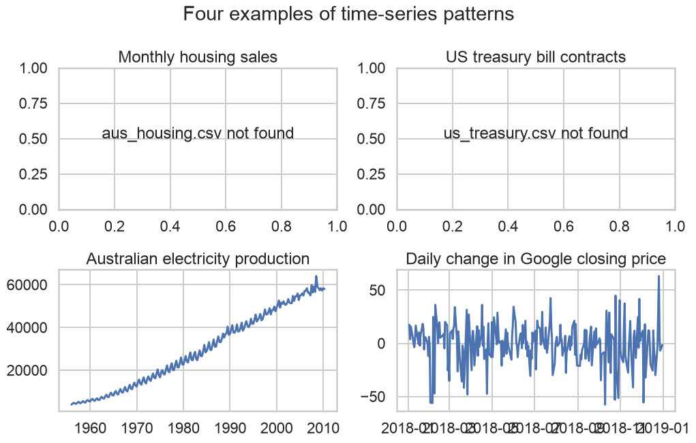
season_cost = total_cost_df.assign(
Year=total_cost_df["Month"].dt.year,
Month_num=total_cost_df["Month"].dt.month,
)
years = np.sort(season_cost["Year"].unique())
palette = dict(zip(years, sns.color_palette("husl", len(years))))
fig, ax = plt.subplots()
sns.lineplot(
data=season_cost, x="Month_num", y="Cost", hue="Year",
palette=palette, legend=False, ax=ax
)
ax.set(
title="Seasonal Plot: Antidiabetic Drug Sales", xlabel="Month",
ylabel="$ (millions)", xticks=range(1, 13),
xticklabels=["Jan", "Feb", "Mar", "Apr", "May", "Jun",
"Jul", "Aug", "Sep", "Oct", "Nov", "Dec"]
)
for year, group in season_cost.groupby("Year"):
ax.text(group["Month_num"].iloc[-1] + .1, group["Cost"].iloc[-1], str(year),
fontsize=8, color=palette[year], va="center")
plt.tight_layout()
plt.show()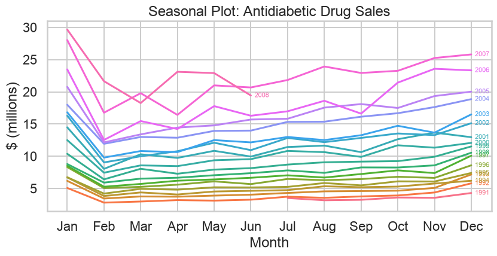
Half-hourly demand can show daily, weekly, and annual patterns.
daily_season = vic_elec_demand.assign(
hour_minute=lambda x: x["ds"].dt.strftime("%H:%M"),
day=lambda x: x["ds"].dt.date,
)
fig, ax = plt.subplots()
sns.lineplot(
data=daily_season, x="hour_minute", y="y",
hue="day", palette="husl", legend=False, ax=ax
)
unique_ticks = daily_season["hour_minute"].unique()
step = max(1, len(unique_ticks) // 12)
positions = range(0, len(unique_ticks), step)
ax.set_xticks(list(positions), labels=unique_ticks[::step], rotation=45)
ax.set(title="Electricity Demand: Victoria", xlabel="Time", ylabel="MWh")
plt.tight_layout()
plt.show()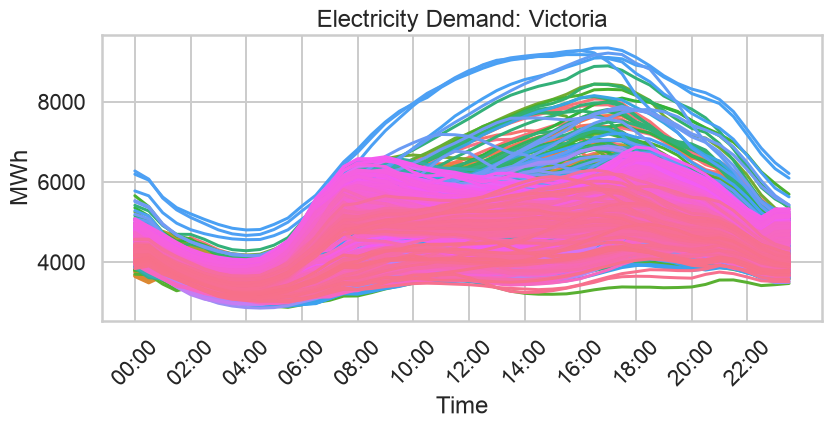
weekly_season = (
vic_elec_demand
.loc[lambda x: x["ds"].between("2012-01-02", "2014-12-28 23:59")]
.assign(
day_of_week=lambda x: x["ds"].dt.day_name(),
week=lambda x: x["ds"].dt.to_period("W").dt.start_time,
)
)
fig, ax = plt.subplots()
for _, group in weekly_season.groupby("week"):
group.plot(x="day_of_week", y="y", ax=ax, legend=False, alpha=.25)
ax.set(title="Electricity Demand: Victoria", xlabel="Time", ylabel="MWh")
plt.tight_layout()
plt.show()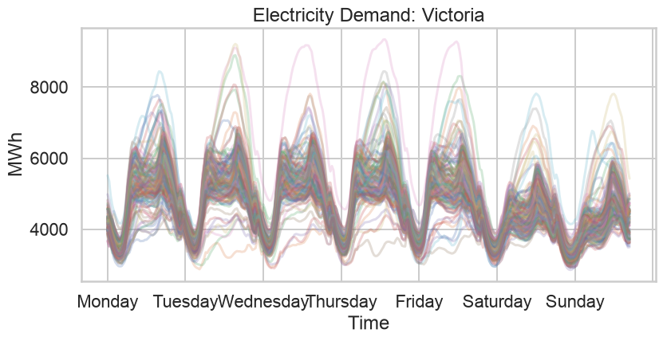
yearly_season = vic_elec_demand.assign(
day_of_year=lambda x: x["ds"].dt.strftime("%m-%d"),
year=lambda x: x["ds"].dt.year,
)
fig, ax = plt.subplots()
for year, group in yearly_season.groupby("year"):
group.plot(x="day_of_year", y="y", ax=ax, label=str(year), alpha=.7)
ax.set(title="Electricity Demand: Victoria", xlabel="Time", ylabel="MWh")
plt.tight_layout()
plt.show()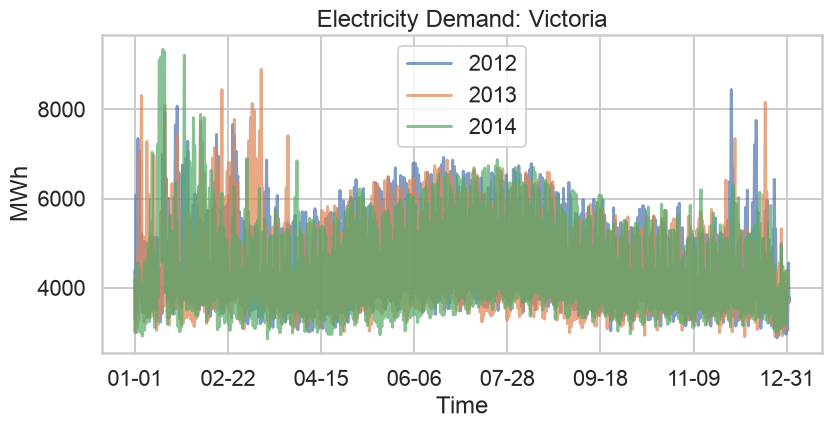
subseries_cost = total_cost_df.assign(
year=lambda x: x["Month"].dt.year,
month_name=lambda x: x["Month"].dt.month_name(),
month_idx=lambda x: x["Month"].dt.month,
)
fig, axes = plt.subplots(1, 12, figsize=(12, 3.7), sharey=True)
for ax, ((_, month_name), group) in zip(
axes, subseries_cost.groupby(["month_idx", "month_name"])
):
ax.plot(group["year"], group["Cost"], color="k")
ax.axhline(group["Cost"].mean(), color="b", linewidth=1)
ax.set(title=month_name[:3], xlabel="")
ax.tick_params(axis="x", rotation=90, labelsize=7)
fig.suptitle("Australian Antidiabetic Drug Sales")
fig.supxlabel("Year")
fig.supylabel("$ (millions)")
plt.tight_layout()
plt.show()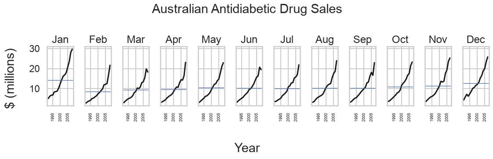
tourism = pd.read_csv(DATA_PATH / "tourism.csv", parse_dates=["ds"])
trips = (
tourism.loc[lambda x: x["Purpose"] == "Holiday"]
.groupby(["State", "ds"], as_index=False)
.agg(y=("y", "sum"))
)
trips.head()| State | ds | y | |
|---|---|---|---|
| 0 | ACT | 1998-01-01 | 196.218550 |
| 1 | ACT | 1998-04-01 | 126.770597 |
| 2 | ACT | 1998-07-01 | 110.679645 |
| 3 | ACT | 1998-10-01 | 170.472206 |
| 4 | ACT | 1999-01-01 | 107.779245 |
fig, ax = plt.subplots()
sns.lineplot(
data=trips, x="ds", y="y", hue="State",
palette=sns.color_palette("husl", trips["State"].nunique()), ax=ax
)
ax.set(title="Australian domestic holidays",
ylabel="Overnight trips ('000)", xlabel="Quarter [1Q]")
ax.legend(loc="center left", bbox_to_anchor=(1.02, .5), frameon=False, title="State")
plt.tight_layout()
plt.show()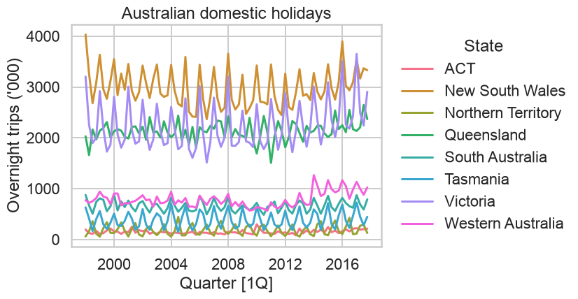
season_trips = trips.assign(
Quarter="Q" + trips["ds"].dt.quarter.astype("string"),
Year=trips["ds"].dt.year,
)
states = season_trips["State"].unique()
fig, axes = plt.subplots(len(states), 1, sharex=True, figsize=(9, 12))
for ax, (state, group) in zip(axes, season_trips.groupby("State")):
sns.lineplot(data=group, x="Quarter", y="y", hue="Year",
palette="husl", legend=False, ax=ax)
ax.set_ylabel("")
ax.text(1.01, .5, state, va="center", transform=ax.transAxes)
fig.suptitle("Australian domestic holidays")
fig.supylabel("Overnight trips ('000)")
plt.tight_layout()
plt.show()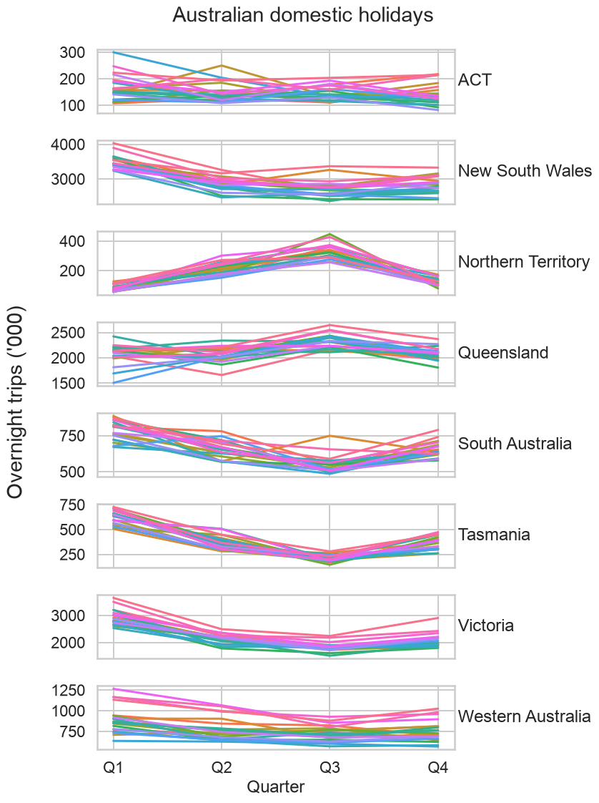
fig, axes = plt.subplots(len(states), 4, sharex=True, sharey="row", figsize=(11, 13))
for ax, ((state, quarter), group) in zip(
axes.flat, season_trips.groupby(["State", "Quarter"])
):
ax.plot(group["Year"], group["y"], color="k")
ax.axhline(group["y"].mean(), color="b", linewidth=1)
if ax in axes[0]:
ax.set_title(quarter)
if ax in axes[:, -1]:
ax.text(1.03, .5, state, va="center", transform=ax.transAxes)
fig.suptitle("Australian domestic holidays")
fig.supxlabel("Year")
fig.supylabel("Overnight trips ('000)")
plt.tight_layout()
plt.show()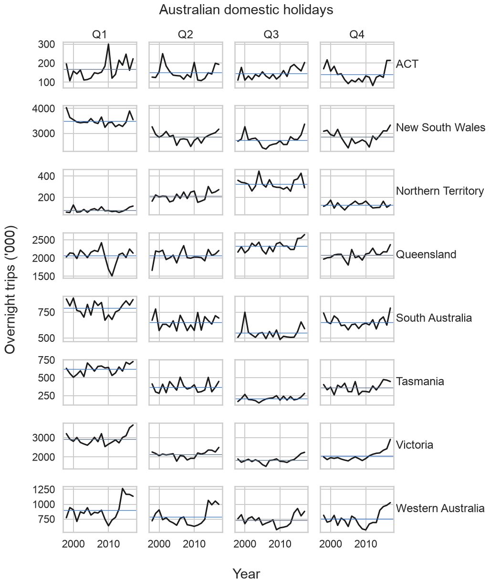
# plot_series(
# vic_elec_df, ids=["Demand"], max_insample_length=2 * 24 * 365,
# xlabel="Time [30m]", ylabel="GW",
# title="Half-hourly electricity demand: Victoria"
# )
fig, ax = plt.subplots(
figsize=(10, 5)
)
plot_series(
df=vic_elec_df,
ids=["Demand"],
plot_random=False,
max_insample_length=2 * 24 * 365,
engine="matplotlib",
id_col="unique_id",
time_col="ds",
target_col="y",
ax=ax,
)
ax.set(
title="Half-hourly electricity demand: Victoria",
xlabel="Time [30m]",
ylabel="GW",
)
fig.tight_layout()
plt.show()# plot_series(
# vic_elec_df, ids=["Temperature"], max_insample_length=2 * 24 * 365,
# xlabel="Time [30m]", ylabel="Degrees Celsius",
# title="Half-hourly temperature: Melbourne, Australia"
# )
fig, ax = plt.subplots(
figsize=(10, 5)
)
plot_series(
df=vic_elec_df,
ids=["Temperature"],
plot_random=False,
max_insample_length=2 * 24 * 365,
engine="matplotlib",
id_col="unique_id",
time_col="ds",
target_col="y",
ax=ax,
)
ax.set(
title="Half-hourly temperature: Melbourne, Australia",
xlabel="Time [30m]",
ylabel="Degrees Celsius",
)
fig.tight_layout()
plt.show()elec_2014 = (
vic_elec_df.loc[lambda x: x["ds"].dt.year == 2014]
.pivot(index="ds", columns="unique_id", values="y")
.reset_index()
)
fig, ax = plt.subplots()
sns.scatterplot(data=elec_2014, x="Temperature", y="Demand",
linewidth=0, s=10, legend=False, ax=ax)
ax.set(title="Scatter Plot of Demand vs. Temperature",
xlabel="Temperature (degrees Celsius)", ylabel="Electricity demand (GW)")
plt.tight_layout()
plt.show()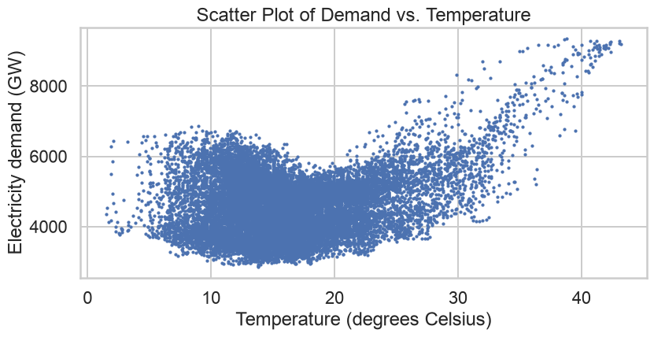
r = \frac{\sum_t (x_t-\bar{x})(y_t-\bar{y})}
{\sqrt{\sum_t(x_t-\bar{x})^2}\sqrt{\sum_t(y_t-\bar{y})^2}}r lies between -1 and 1;r is modest.correlations = [-0.9, -0.5, 0, 0.5, 0.9]
fig, axes = plt.subplots(1, 5, figsize=(13, 3), sharex=True, sharey=True)
rng = np.random.default_rng(42)
for ax, rho in zip(axes, correlations):
values = rng.multivariate_normal([0, 0], [[1, rho], [rho, 1]], size=120)
ax.scatter(values[:, 0], values[:, 1], s=10, alpha=.55)
ax.set_title(f"r ≈ {np.corrcoef(values.T)[0,1]:.2f}")
plt.tight_layout()
plt.show()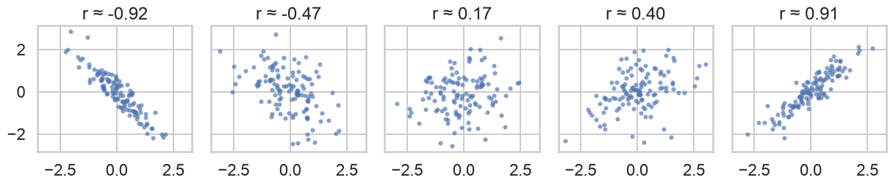
anscombe = sns.load_dataset("anscombe")
g = sns.FacetGrid(anscombe, col="dataset", col_wrap=2, height=2.8)
g.map_dataframe(sns.scatterplot, x="x", y="y")
g.map_dataframe(sns.regplot, x="x", y="y", scatter=False, ci=None, color="C1")
g.set_titles("Dataset {col_name}")
g.figure.suptitle("Anscombe's quartet", y=1.03)
plt.show()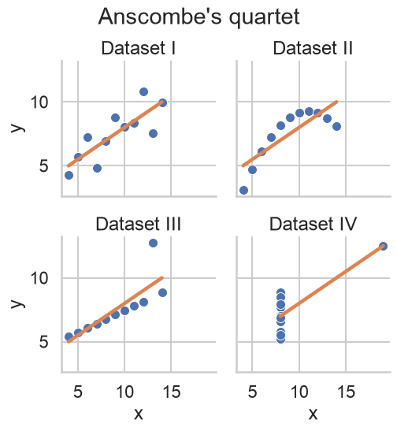
fig, axes = plt.subplots(visitor_wide.shape[1], 1, sharex=True, figsize=(9, 12))
for ax, state in zip(axes, visitor_wide.columns):
ax.plot(visitor_wide.index, visitor_wide[state])
ax.text(1.01, .5, state, va="center", transform=ax.transAxes)
fig.suptitle("Australian domestic tourism")
fig.supxlabel("Quarter")
fig.supylabel("Overnight trips ('000)")
plt.tight_layout()
plt.show()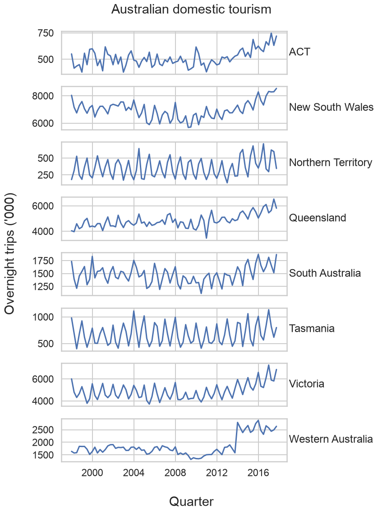
def corrfunc(x, y, **kws):
r, pvalue = pearsonr(x, y)
plt.gca().annotate(
f"Corr:\n{r:.3f}{'***' if pvalue < .05 else ''}",
xy=(.5, .5), xycoords="axes fraction", ha="center", va="center"
)
g = sns.PairGrid(visitor_wide.dropna(), height=1.5)
g.map_lower(sns.scatterplot, s=12)
g.map_upper(corrfunc)
g.map_diag(sns.kdeplot, lw=2)
g.set(xlabel="", ylabel="")
plt.show()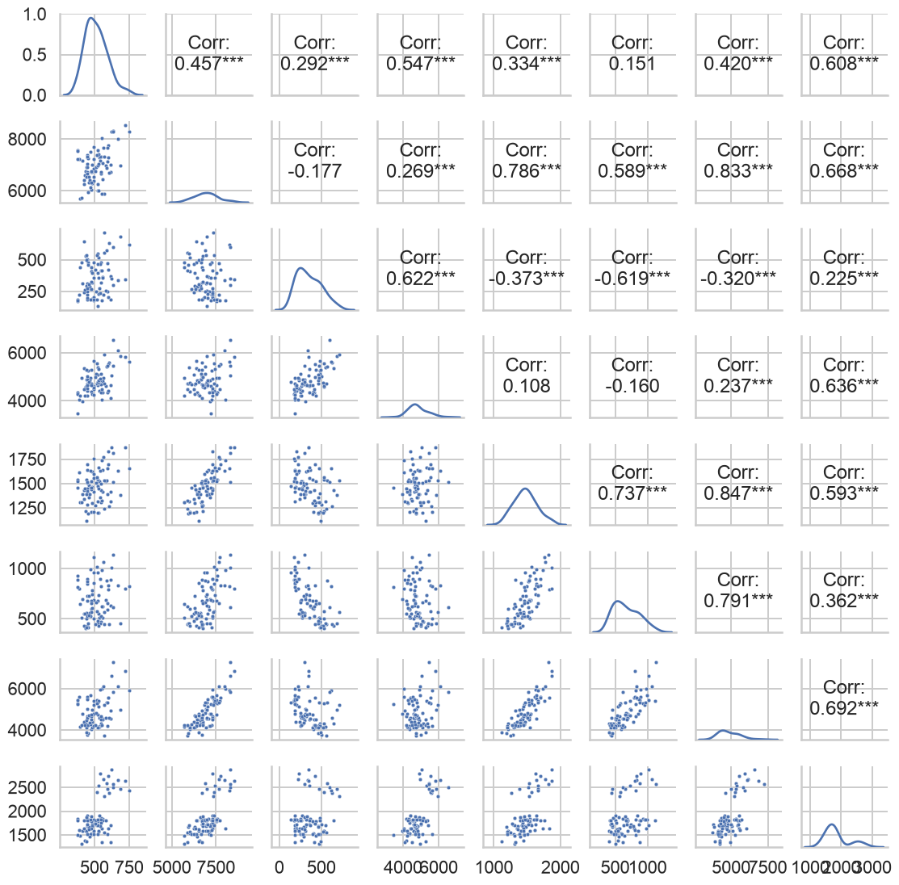
beer = (
aus_production[["ds", "Beer"]]
.loc[lambda x: x["ds"] >= "2000"]
.assign(Season=lambda x: "Q" + x["ds"].dt.quarter.astype("string"))
.rename(columns={"Beer": "y"})
)
lims = (.95 * beer["y"].min(), 1.05 * beer["y"].max())
colors = dict(zip(beer["Season"].unique(), sns.color_palette("viridis", 4)))
fig, axes = plt.subplots(3, 3, figsize=(9, 7), sharex=True, sharey=True)
for i, ax in enumerate(axes.flat, start=1):
lagged = beer.assign(lag=beer["y"].shift(i))
sns.scatterplot(data=lagged, x="lag", y="y", hue="Season",
palette=colors, ax=ax, legend=(i == 6), s=28)
ax.plot(lims, lims, color=".5", ls="--", lw=1)
ax.set(title=f"lag {i}", xlabel="", ylabel="", aspect="equal")
if i != 6 and ax.get_legend() is not None:
ax.get_legend().remove()
fig.supxlabel("lag(Beer, k)")
fig.supylabel("Beer")
plt.tight_layout()
plt.show()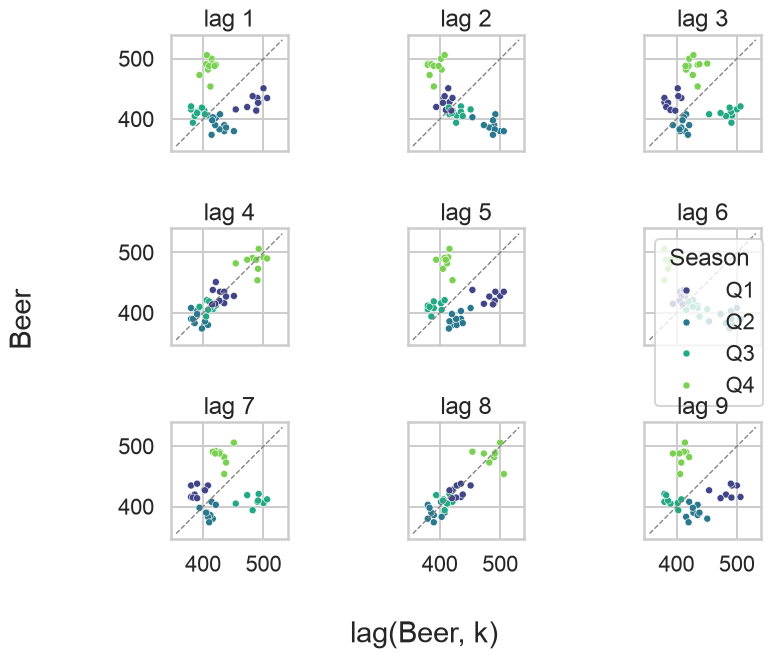
Autocorrelation measures linear association between a series and its lagged values. The collection of coefficients is the ACF.
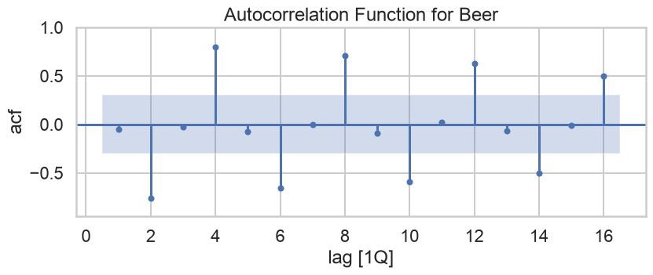
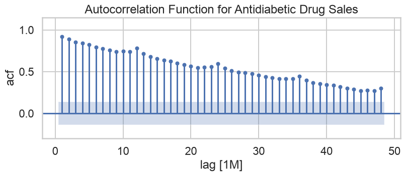
# random = np.random.RandomState(30)
# wn = pd.DataFrame({
# "y": random.normal(0, 1, 50),
# "ds": np.arange(1, 51),
# "unique_id": "wn",
# })
# plot_series(wn, target_col="y", xlabel="sample [1]", title="White noise")
random = np.random.RandomState(30)
wn = pd.DataFrame({
"y": random.normal(0, 1, 50),
"ds": np.arange(1, 51),
"unique_id": "wn",
})
fig, ax = plt.subplots(
figsize=(10, 5)
)
plot_series(
df=wn,
id_col="unique_id",
time_col="ds",
target_col="y",
ids=["wn"],
plot_random=False,
engine="matplotlib",
ax=ax,
)
ax.set(
title="White noise",
xlabel="Sample [1]",
ylabel="Value",
)
fig.tight_layout()
plt.show()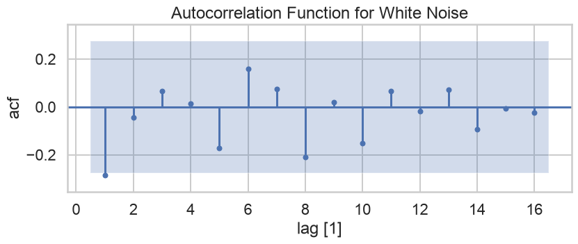
Approximate bound: ±0.28Most sample autocorrelations should lie near zero, although random exceedances can occur.
Bricks, Lynx, GOOG_Close, and Victorian Demand.gafa_stock.Sales, AdBudget, and GDP from tute1.csv.Note: This deck follows the chapter’s dataset and figure sequence, while the teaching prose is adapted and rewritten. Code examples from the online edition are published under the license stated by the authors.
Data Analytics & Visualization | Time Series Graphics